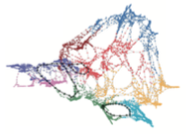

Revisiting Stress Majorization as a Unified Framework for Interactive Constrained Graph Visualization

TVCG (2017)
Authors
Yunhai Wang, Yanyan Wang, Yinqi Sun, Lifeng Zhu, Kecheng Lu, Chi-Wing Fu, Michael Sedlmair, Oliver Deussen, Baoquan Chen
Materials
Abstract
We present an improved stress majorization method that incorporates various constraints, including directional constraints without the necessity of solving a constraint optimization problem. This is achieved by reformulating the stress function to impose constraints on both the edge vectors and lengths instead of just on the edge lengths (node distances). This is a unified framework for both constrained and unconstrained graph visualizations, where we can model most existing layout constraints, as well as develop new ones such as the star shapes and cluster separation constraints within stress majorization. This improvement also allows us to parallelize computation with an efficient GPU conjugant gradient solver, which yields fast and stable solutions, even for large graphs. As a result, we allow the constraint-based exploration of large graphs with 10K nodes - an approach which previous methods cannot support.